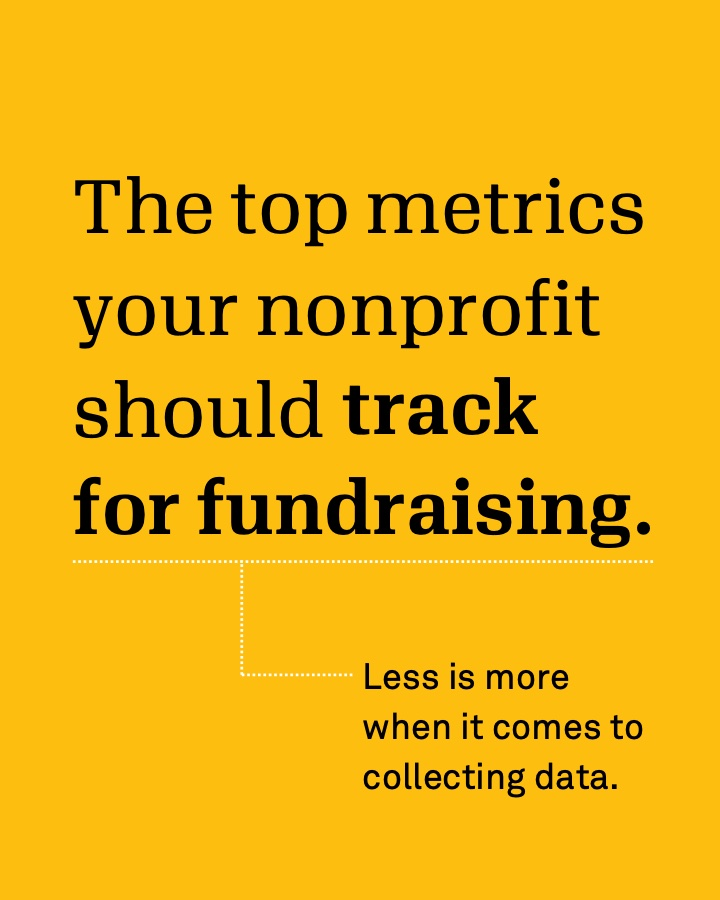
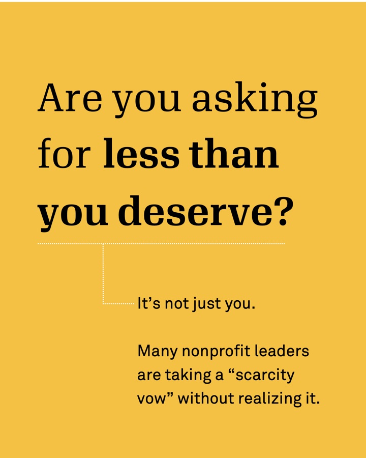

Writing
Blog posts for Candid insights
Candid's 2024 Nonprofit Compensation Report: Executive compensation is on the rise, but not for everyone
Benchmark data for staff and executive pay, plus trends like top-earning program areas and whose salaries are rising or falling.
Read the post ↗ Report launch · Candid insightsBursting at the seams: Candid's largest nonprofit compensation report yet
A first look at the most complete source of nonprofit compensation data, built on executive salaries from Form 990 filings.
Read the post ↗ How-to · Candid insightsLaunching a successful nonprofit communications campaign
A practical guide to planning and launching a campaign that gets the word out about mission-driven work.
Read the post ↗Candid insights newsletter
I owned strategy, content, segmentation, testing, and deployment for Candid's biweekly newsletter to over 500,000 subscribers, reaching a 40% open rate and doubling click-through from 1% to 2%.
Pushing back on the overhead myth
A response to the federal fraud task force that names nonprofits, plus a featured chart on board gender representation at women-led nonprofits.
View the email ↗ May 2026Setting the record straight on nonprofit funding
Why stale financials make donors suspicious, plus a featured chart on how revenue mix differs between large and small nonprofits.
View the email ↗ June 2026Retaining funders beats chasing new ones
Why keeping current funders pays off more than chasing new ones, with a chart showing Gen Z gave at a higher rate than any other generation.
View the email ↗ July 2026Making the case for earned revenue
Why nonprofits shouldn't shy away from charging for their work, with a chart showing very small nonprofits get just 0.4% of foundation funding.
View the email ↗Web
Landing pages for Candid
Strengthening the nonprofit sector
The home for Candid's sector-wide work, bringing Demographics via Candid, fiscally sponsored projects, and the defense of the sector together on one page.
Visit the page ↗ Campaign page · candid.orgDemographics via Candid
Explains how nonprofits share demographic data once and funders reuse it, with steps to join, the partner network, and six free ways to access the data.
Visit the page ↗ Campaign page · candid.orgDefending the nonprofit sector
How Candid supports nonprofits through funding cuts, misinformation, and policy shifts, from rapid response research to free trainings and resources.
Visit the page ↗Campaign collateral
Demographics via Candid flyers

Nonprofit contributors
Shows nonprofits how to share demographic data once, through their Candid profile, instead of filling out the same request for every funder.

Become a champion
The version of the same campaign for funders. The campaign recruited nearly 200 partners.
Portfolio
Social media
Data carousels
Mission over myth: earned income
A myth-vs-fact series on earned income, which makes up over 70% of nonprofit revenue. It ends with what nonprofits should and shouldn't do about the myth.
PDF ↗ LinkedIn ↗ Instagram ↗
Donors want nonprofits to get out the vote
Results from a 2026 M+R donor survey, one finding per slide, followed by ways nonprofits can support voter education.
PDF ↗ LinkedIn ↗ Instagram ↗

The fundraising metrics worth tracking
Tracking too many metrics slows decisions. This carousel names the few that matter for planning, donor engagement, and measuring results, then lays out a four-step plan to collect them.
PDF ↗ LinkedIn ↗ Instagram ↗

Breaking the scarcity vow
Names the habit of nonprofit leaders quietly accepting less, shows how it hits women and leaders of color hardest, and ends with what leaders, boards, and funders can do about it.
PDF ↗ LinkedIn ↗ Instagram ↗